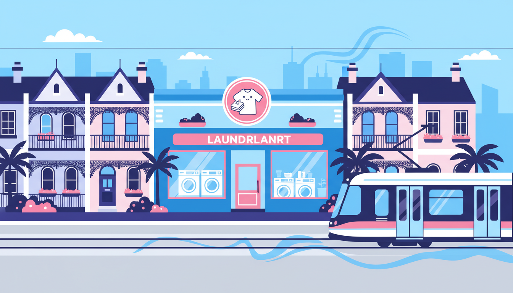

Melbourne's inner north is home to some of the city's most vibrant neighbourhoods. From the bustling cafes of Brunswick to the leafy streets of Northcote, this part of town has a character all its own. It's also an area with a huge number of renters, share houses, and apartment dwellers — many of whom rely on laundromats as part of their weekly routine. But not all laundromats are created equal. Here's what to look for, where to find a good one, and why it matters more than you might think.
What Makes a Great Laundromat?
You might assume a laundromat is a laundromat — machines, detergent, done. But anyone who's been to a few different ones knows there's a massive range in quality. The difference between a great laundromat and a mediocre one can turn a simple chore into either a smooth, painless experience or a frustrating waste of time. Here's what separates the good from the not-so-good.
Clean and Well-Maintained
This is the bare minimum, but you'd be surprised how many laundromats fall short. A great laundromat is visibly clean — the floors, the machines, the folding tables, and the benches. The machines are in good working order with clear instructions. There are no "out of order" signs taped to half the equipment. If a laundromat can't keep itself clean, it's a fair question whether your clothes will come out any better.
Modern, Reliable Machines
Older machines take longer, use more water and energy, and don't clean as effectively as newer commercial units. A laundromat that's invested in modern equipment offers faster cycles, better spin extraction (which means shorter drying times), and more consistent results. Look for machines that display the remaining cycle time — it makes planning your visit much easier.
Fair, Transparent Pricing
Nobody likes surprises when it comes to cost. The best laundromats clearly display their pricing, don't bury extra charges in the fine print, and don't add card surcharges on top. Some laundromats charge a premium for card payments, which feels increasingly out of touch in 2026. A laundromat that offers zero card fees is one that respects your time and your wallet.
Convenient Hours
Laundry doesn't always fit neatly into business hours. Shift workers, students, parents, and freelancers all have different schedules. A laundromat that opens early and closes late — ideally 6 AM to 10 PM or similar — gives people the flexibility to fit laundry around their lives rather than the other way around.
Card and Contactless Payment
Coin-only laundromats are increasingly rare, and for good reason. Most people don't carry coins anymore. A modern laundromat should accept tap-and-go payments at a minimum. Bonus points for smartphone payment options. The fewer barriers between you and a clean load of laundry, the better.
Free Detergent
This one's a genuine game-changer. Some laundromats include detergent in the price of the wash, which means you don't need to bring your own, buy it from a vending machine, or worry about measuring the right amount. It simplifies the whole experience and removes one of the most common "I forgot to bring..." moments.
Inner North Suburbs: Where to Find a Laundromat
Melbourne's inner north covers a wide area, and laundromat options vary quite a bit from suburb to suburb. Here's a quick rundown of the key neighbourhoods and what you'll find.
Brunswick and Brunswick East
Brunswick and Brunswick East are two of the inner north's busiest suburbs. Sydney Road is packed with shops, restaurants, and foot traffic, while Lygon Street in Brunswick East offers a slightly quieter, more residential feel with its own excellent collection of cafes and eateries. The area has a large student and renter population, which means laundromat demand is consistently high.
Laundry Day Brunswick East is located right at 220 Lygon Street, Brunswick East — just next to La Taverna restaurant. It's easily accessible by tram (the Route 1 and Route 6 trams run along Lygon Street) and there's street parking available nearby. With giant 27KG washers, free detergent, zero card fees, and opening hours from 6 AM to 10 PM seven days a week, it's purpose-built for the way inner north locals actually live. Whether you're a student doing a weekly load, a family tackling a doona, or a shift worker fitting laundry in at 7 AM before bed, Laundry Day Brunswick East has you covered.
Fitzroy North
Fitzroy North sits between the buzz of Fitzroy's Smith Street and the residential quiet of Northcote. It's a popular spot for young professionals and families, with beautiful Victorian terraces lining many of the streets. Laundromat options here are limited, so residents often look to neighbouring suburbs. The Brunswick East location on Lygon Street is a short trip from most parts of Fitzroy North — easily reachable by bike, tram, or a quick drive.
Northcote
Northcote is one of the inner north's most sought-after suburbs, centred around the bustling High Street strip. It has a strong community feel with a mix of long-term residents and newcomers. Like Fitzroy North, laundromat options in Northcote itself can be hit-and-miss. For a reliable, modern option, Laundry Day Brunswick East is roughly a ten-minute drive or a short tram ride away — well worth the trip for the quality of the facilities.
Carlton North
Carlton North borders Brunswick East to the south and shares the Lygon Street strip. Residents here are well positioned to access Laundry Day on Lygon Street, which is within walking distance for many parts of the suburb. It's an easy stop to make on the way to or from the shops, a coffee, or a meal at one of the many restaurants along the strip.
Why Laundry Day Stands Out
There are plenty of laundromats scattered across Melbourne's inner north, but most of them haven't changed much in decades. Worn-out machines, coin-only payment, no detergent provided, and opening hours that don't suit modern lifestyles. Laundry Day was built to be different.
Every Laundry Day location offers the same experience: modern machines including giant 27KG washers for bulky loads, free detergent dispensed automatically, zero card fees so you can tap and go, and long hours from 6 AM to 10 PM every day of the week. The stores are clean, bright, and well-maintained — because if you're trusting a place with your clothes, the least it can do is look after itself.
Beyond Brunswick East, Laundry Day also has locations in St Albans (4/329 Main Road East) and Maribyrnong (103 Rosamond Rd), serving Melbourne's west. No matter which location you visit, the experience is the same: straightforward, affordable, and hassle-free.
Finding the Right Laundromat for You
At the end of the day, the best laundromat is the one that makes your life easier. It should be clean, convenient, and reasonably priced. It should have machines that actually work, hours that fit your schedule, and a payment system that doesn't require a pocketful of gold coins. If it includes detergent for free, even better — that's one less thing to worry about on laundry day.
If you're in Melbourne's inner north and looking for a laundromat you can rely on, give Laundry Day Brunswick East a try. Bring your laundry, tap your card, and let the machines do the rest. You might find that the weekly wash becomes the easiest part of your week.
Try Laundry Day Brunswick East
220 Lygon Street, Brunswick East. Giant 27KG washers, free detergent, zero card fees. Open 7 days, 6AM – 10PM.
Find Your Nearest Location